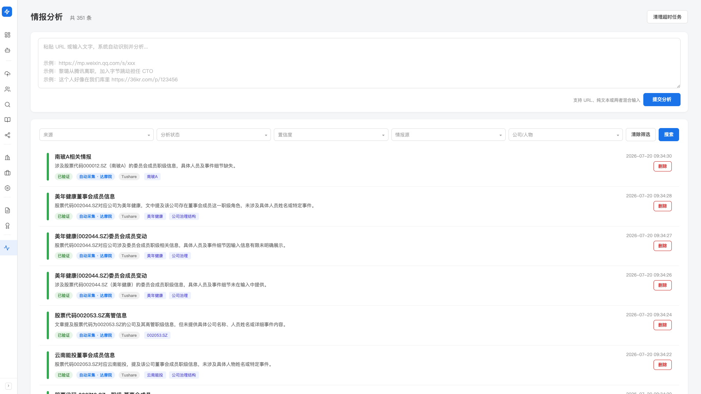
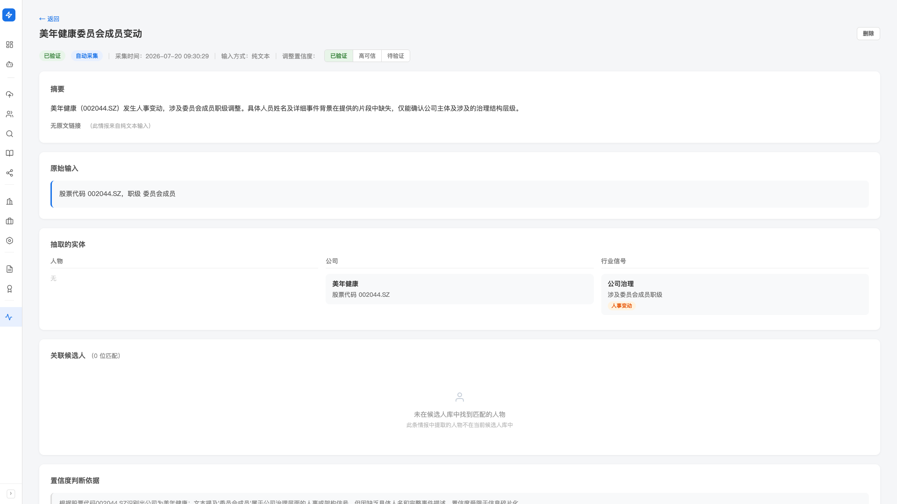

一线情报
客户的高管离职了、对标公司的核心团队跳槽了、行业动态影响某位候选人价值—— 你在朋友圈或公众号看到一条线索，粘进 Hunter， AI 自动抽出人物 / 公司 / 行业信号，匹配到库里的候选人， 一键把变动信息并入档案——你的库永远比对手快一步。
产品里对应左侧「情报」分组下的「情报分析」。
三种情报来源
- 手动提交：你在某处看到的一条线索，复制粘贴 URL 或文字到 Hunter——用得最多
- 关键词采集：设好关键词，Hunter 定期用搜索源（百度 AI 搜索 / Serper / Tushare）抓取
- 订阅采集：按公司订阅，订阅后自动抓取该公司在 36 氪（文章 / 快讯）/ 虎嗅 / 东方财富 的新动态
三种来源的内容都进同一个情报池，统一在「情报分析」页面看。
手动提交一条情报
这是日常用得最多的入口，几秒钟搞定。
- 左侧「情报」分组进入「情报分析」
-
在顶部「快速提交区」粘贴内容
支持三种输入方式：
- 纯 URL：
https://mp.weixin.qq.com/s/xxx，系统抓取页面正文 - 纯文字：
张三从腾讯离职，加入字节跳动担任 CTO，直接分析文字 - URL + 文字（混合）：粘 URL 后补一句你的备注，比如「这个人好像在我们库里」
- 纯 URL：
-
点「提交分析」
任务进入"分析中"状态。Hunter 会： ① 如果有 URL 抓取正文 → ② AI 抽取实体（人物 / 公司 / 行业信号）→ ③ 用人物姓名匹配候选人库 → ④ 给出可一键应用的字段变更建议。 处理通常很快完成（视内容长短和抓取情况而定）。
-
点列表里的卡片打开详情页
看 AI 抽出的实体和匹配的候选人，决定要不要把信息应用到候选人档案。

情报详情页：看 AI 抽出了什么
点列表卡片进入详情页。从上到下：

摘要 + 原文
AI 把抓取的正文（或你贴的纯文字）总结成几行摘要，原始内容也保留可查。
抽取的实体（3 列）
- 人物：从内容里识别出的人名（如「张三」），附带详情和事件类型（如「离职 / 加入 / 晋升」）
- 公司：提到的公司，附详情和事件（如「裁员 / 融资 / 收购」）
- 行业信号：行业层面的动态（如「某领域融资热」）
关联候选人 + 一键应用变更
这是核心：AI 把抽到的人物姓名去候选人库匹配，符合的候选人列在这里。每位匹配候选人：
- 姓名：点跳到候选人详情页
- 当前公司 + 职位：库内现状
- 匹配方式 + 置信度：告诉你为什么 AI 认为是这个人——精确姓名命中（置信度高），或姓名 + 当前公司的模糊匹配（界面上标为 exact_name / fuzzy_name）
- 字段变更预览：AI 建议把什么改成什么（如「当前公司：腾讯 → 字节跳动」）
每位匹配候选人有三个操作按钮：
-
「确认更新」（绿色）
把变更应用到候选人档案，原值替换为新值。应用后这条匹配标为「已更新」，可「撤销」。
-
「忽略」
不应用这条匹配（比如同名但不是同一人，或信息不准）。标为「已忽略」，可「撤销」。
-
「撤销」（应用 / 忽略后出现）
恢复初始状态，重新做决定。
AI 抽实体 + 匹配候选人是自动的， 但是否把变更应用到候选人档案，需要你点「确认更新」—— 和「候选人档案补全」一样，AI 给建议，你拍板。
情报列表：筛选与日常浏览
情报量大起来后用筛选定位你关心的。列表页提供 5 个筛选维度（多选）：
- 来源：手动提交 / 关键词采集 / 订阅采集
- 分析状态：成功 / 进行中 / 失败
- 置信度（由情报来源本身的可信度决定，也可在详情页手动调整，与是否「确认更新」候选人无关）： 已验证（来自高可信源或你手动标为已验证）· 高可信· 待验证（默认，建议看一眼再用）
- 情报源：百度 AI 搜索 / Serper / Tushare / 36 氪 / 虎嗅 / 东方财富 等具体来源
- 公司 / 人物：按实体名过滤（支持搜索）
每条情报卡片左侧有置信度颜色条（已验证 / 高可信 / 待验证 三色），扫一眼就知道哪些更重要。
卡片上的标签是什么意思
- 置信度标签：已验证（绿）/ 高可信（蓝）/ 待验证（灰）
- 来源标签：手动提交 / 订阅采集 · <公司名> / 自动采集 · <关键词>
- 情报源标签：百度 AI 搜索、Serper.dev、Tushare、36 氪、虎嗅、东方财富 等
- 候选人计数（卡片右侧）：「N 位候选人」——AI 匹配到几位库内候选人
失败的情报怎么处理
分析失败的情报会在列表里标「分析失败」，详情面板显示失败原因。 卡片右侧有「重试」按钮可重新跑分析。 常见失败原因：URL 需要登录、页面 JS 渲染、被反爬等。
清理超时任务
如果有任务长时间停在「进行中」（比如 Hunter 在跑分析时意外退出）， 页面右上角「清理超时任务」按钮一键清理—— 这些超时任务会标为失败，可以重试或删除。
关键词采集 / 订阅采集（自动模式）
除了手动粘，Hunter 还可以定期自动跑，从信息源主动捞情报。 两种自动模式：
- 关键词采集（搜索源）：你按目标公司 / 目标人物 / 行业关键词三类分别设好要盯的词（如公司填「字节跳动」、人物填某位高管、行业填「具身智能」）， Hunter 用百度 AI 搜索 / Serper / Tushare 等搜索源定期拉取
- 订阅采集（订阅源）：你按公司订阅（搜公司名添加）， 订阅后自动抓取该公司在 36 氪（文章 / 快讯）/ 虎嗅 / 东方财富 的新动态
两种自动模式的关键词、订阅和采集节奏都在「设置 → 情报采集」，分「搜索源」（按关键词搜）和「订阅源」（盯固定公司）两个标签页。 各个数据源的凭据和启用开关则统一放在「设置 → 数据源」页——搜索源需要先在那里填好对应凭据并打开开关才能启用（订阅源无需凭据）。 配好之后 Hunter 在后台跑，每次新进来的情报和你手动提交的一样进入「情报分析」列表。
最有 ROI 的是对标公司和你在盯的核心人物——把它们分别填进「目标公司」「目标人物」。 「行业关键词」尽量选具体的细分方向（如「具身智能」），太宽泛的大词会捞到一堆无关内容。 三类加起来 10-20 个是个合理的起点。
最佳实践
朋友圈刷到对标公司的人事变动、微信群讨论某高管动态—— 第一时间复制内容粘到 Hunter，不要先看完再决定要不要存。 AI 几十秒分析完，如果没什么用最多删掉；如果有用就成了你的私有情报资产。 错过了就再也找不回来。
列表里有些情报「N 位候选人 = 0」，说明 AI 抽出的人物在你库里没找到—— 这其实是新候选人入库机会： 这个人在公开报道里出现，说明 ta 可能是个重要人物， 专门去搜 ta 的简历或公开资料入库，长期收益高。
常见提示
微信公众号链接有时因为反爬或 token 失效抓不到正文。 这时改用：打开微信文章，复制全文，粘进 Hunter 当纯文字提交—— 分析效果完全一样。
AI 把 A 公司的张三误匹配成你库里 B 公司的张三—— 点详情页里那条匹配的「忽略」按钮即可，不会影响候选人档案。 匹配靠的是姓名（加当前公司辅助），所以同名的人需要你来分辨； 给库里的候选人补全「当前公司」、登记英文名 / 别名，能减少这类误判。
AI 抽出的人物变动信息是基于原文的解读，原文本身可能有误、被否认、或被夸大。 重要变动（如某高管入职）应用到候选人档案前， 建议自己查证一遍再点「确认更新」。